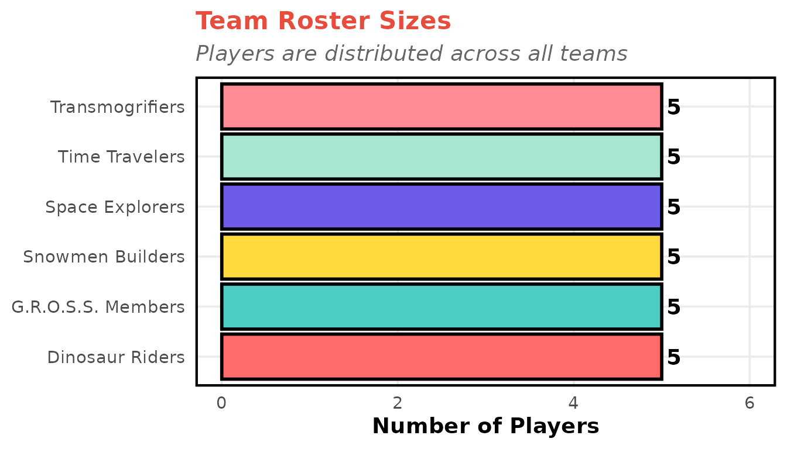
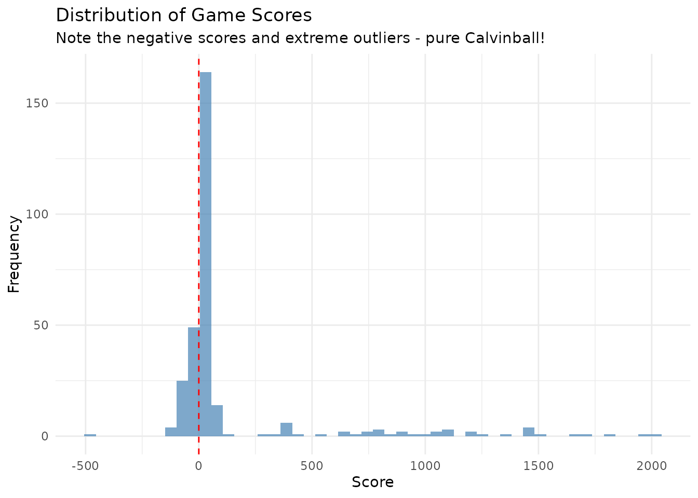
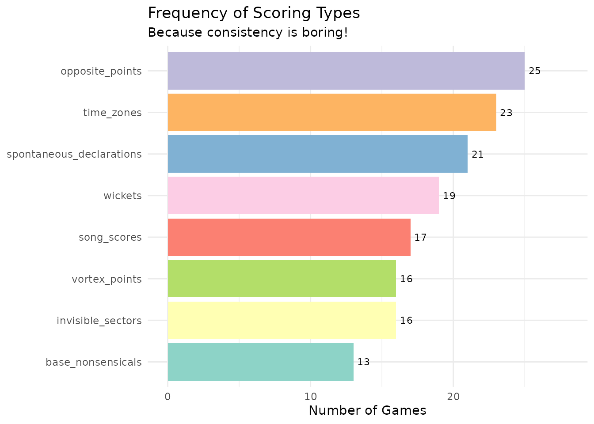
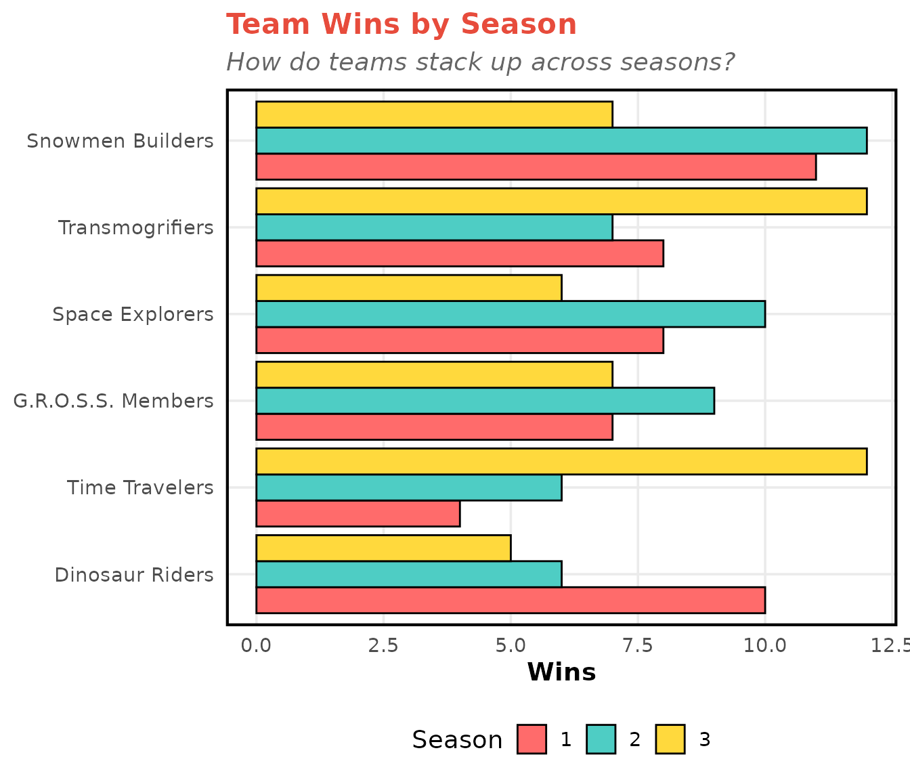
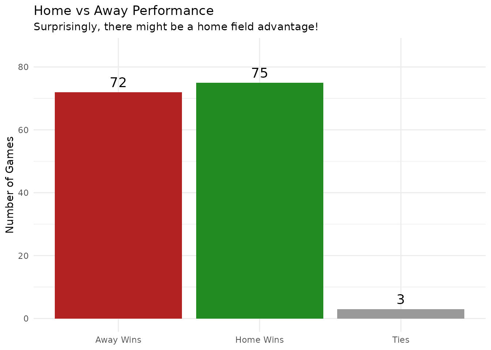
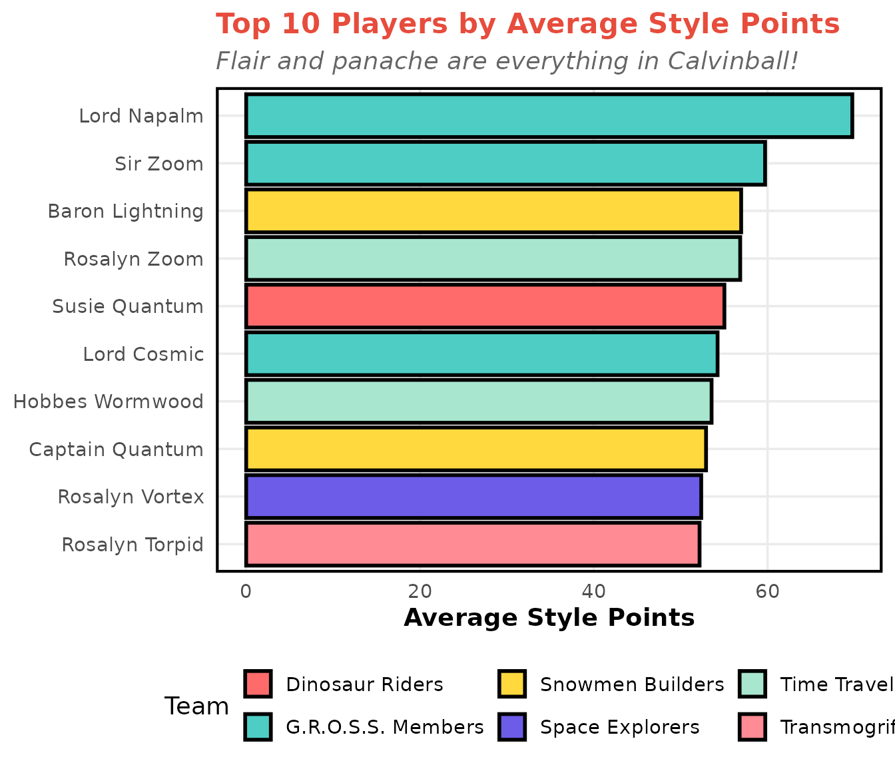
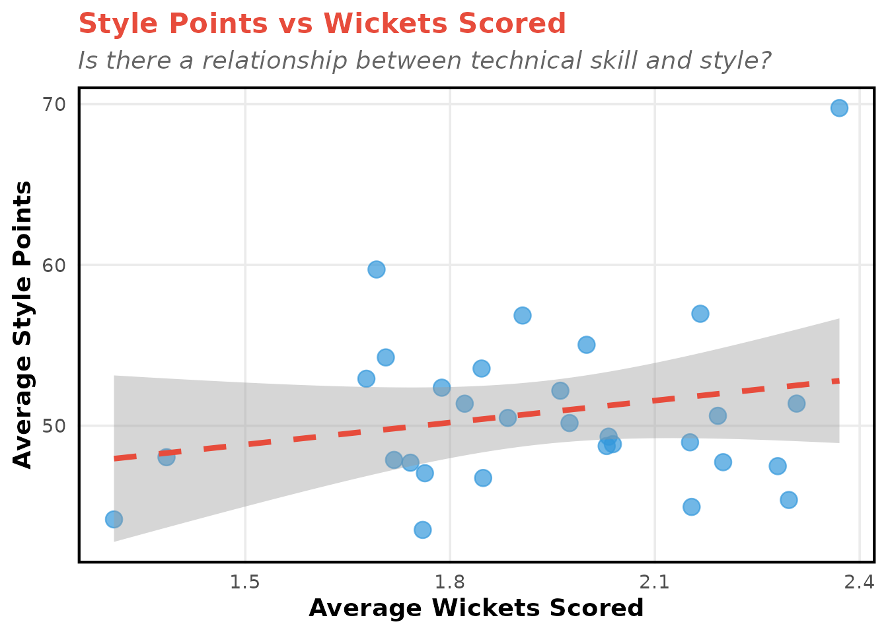
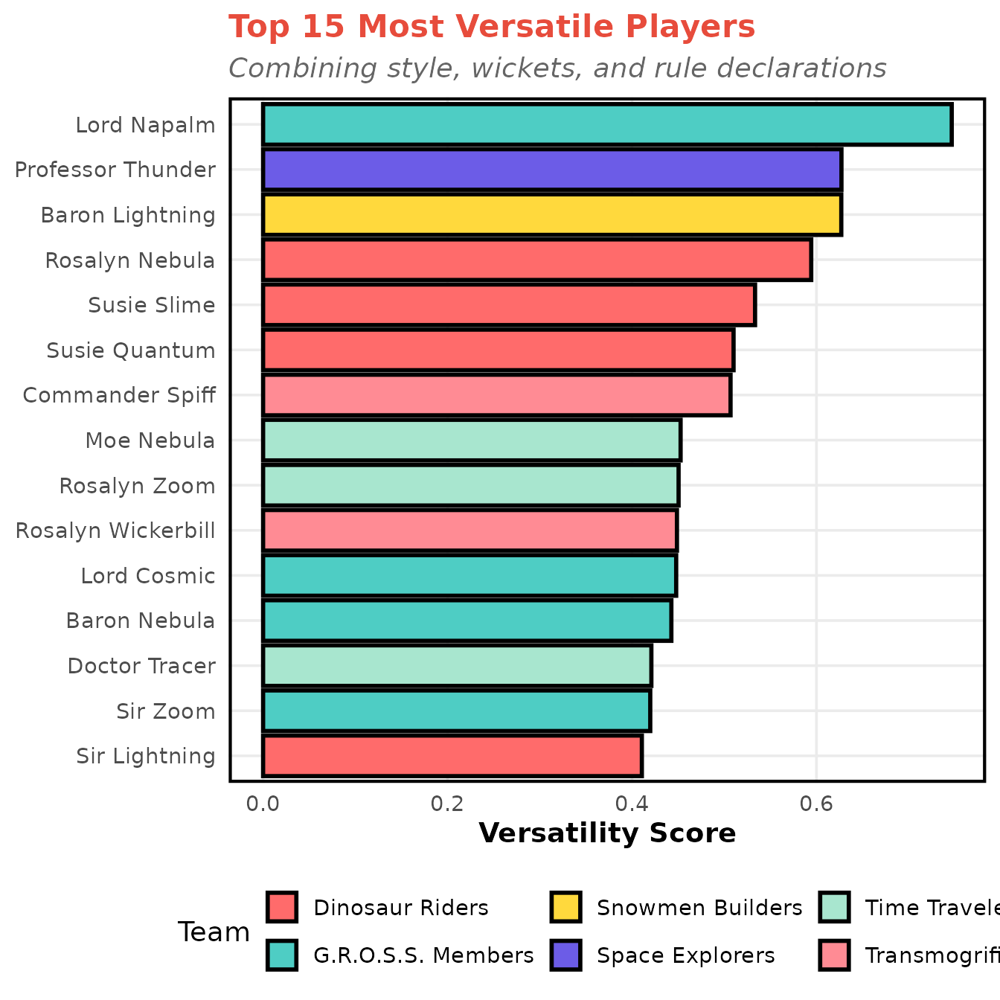

The Score is still Q to 12
Analyzing the Most Chaotic Sport in the Universe
Source:vignettes/calvinball-eda.Rmd
calvinball-eda.Rmd“The only permanent rule is that you can’t play it the same way twice!” - Calvin
Welcome to the first comprehensive analysis of the Calvinball League, where chaos meets competition and rules are made up on the spot!
⚡ KAPOW! ⚡
Get ready for an exploratory data analysis that examines:
- 🎭 Player performance metrics (including the all-important style points!)
- 🏆 Team dynamics and competitive balance
- 🎲 The beautifully unpredictable nature of the game
- 📊 Statistical patterns in pure chaos
Warning: Traditional sports analytics may not apply here!
Loading the Data
The calvinball package provides four datasets that can be loaded directly:
library(calvinball)
library(dplyr)
library(tidyr)
library(ggplot2)
# Set a comic-inspired theme
theme_set(theme_minimal(base_size = 14) +
theme(
plot.title = element_text(face = "bold", size = 16, color = "#E74C3C"),
plot.subtitle = element_text(color = "#666", face = "italic"),
panel.grid.minor = element_blank(),
panel.border = element_rect(fill = NA, color = "#000", linewidth = 1.5),
axis.title = element_text(face = "bold"),
legend.position = "bottom"
))
# The datasets are loaded automatically with the package
# cb_players, cb_teams, cb_games, cb_player_stats
# Quick overview
cat(sprintf("📊 Dataset Overview
• %d players across %d teams
• %d games played over %d seasons
• %d individual performance records
The Calvinball League data is ready for analysis!",
nrow(cb_players),
nrow(cb_teams),
nrow(cb_games),
length(unique(cb_games$season)),
nrow(cb_player_stats)
))
#> 📊 Dataset Overview
#>
#> • 30 players across 6 teams
#> • 150 games played over 3 seasons
#> • 900 individual performance records
#>
#> The Calvinball League data is ready for analysis!League Structure
Teams
teams_with_size <- cb_players |>
count(team_id, name = "roster_size") |>
left_join(cb_teams, by = "team_id")
teams_with_size |>
select(team_name, roster_size) |>
knitr::kable(col.names = c("Team Name", "Roster Size"))| Team Name | Roster Size |
|---|---|
| Time Travelers | 5 |
| Space Explorers | 5 |
| G.R.O.S.S. Members | 5 |
| Snowmen Builders | 5 |
| Dinosaur Riders | 5 |
| Transmogrifiers | 5 |
Player Distribution
cb_players |>
left_join(cb_teams, by = "team_id") |>
count(team_name) |>
ggplot(aes(x = reorder(team_name, n), y = n, fill = team_name)) +
geom_col(show.legend = FALSE, color = "#000", linewidth = 1) +
geom_text(aes(label = n), hjust = -0.3, fontface = "bold") +
coord_flip() +
labs(title = "Team Roster Sizes",
subtitle = "Players are distributed across all teams",
x = NULL,
y = "Number of Players") +
scale_fill_manual(values = comic_colors) +
ylim(0, max(table(cb_players$team_id)) + 1)
Game Analysis
Scoring Chaos
⚡ ZAP! One of the hallmarks of Calvinball is its completely unpredictable scoring system! Scores can range from deeply negative to astronomical!
games_long <- cb_games |>
select(game_id, season, score_home, score_away) |>
pivot_longer(cols = c(score_home, score_away),
names_to = "location",
values_to = "score")
ggplot(games_long, aes(x = score)) +
geom_histogram(bins = 50, fill = "#3498DB", alpha = 0.8, color = "#000") +
geom_vline(xintercept = 0, linetype = "dashed", color = "#E74C3C", linewidth = 1.5) +
labs(title = "Distribution of Game Scores",
subtitle = "Note the negative scores and extreme outliers - pure Calvinball!",
x = "Score",
y = "Frequency")
score_stats <- games_long |>
summarise(
Minimum = min(score),
Median = median(score),
Mean = round(mean(score), 1),
Maximum = max(score),
`Std Dev` = round(sd(score), 1)
)
knitr::kable(score_stats, caption = "📊 Score Summary Statistics")| Minimum | Median | Mean | Maximum | Std Dev |
|---|---|---|---|---|
| -480 | 15 | 142.4 | 2018 | 386.2 |
Scoring Types
In true Calvinball fashion, the scoring system changes from game to game!
cb_games |>
count(scoring_type) |>
ggplot(aes(x = reorder(scoring_type, n), y = n, fill = scoring_type)) +
geom_col(show.legend = FALSE, color = "#000", linewidth = 1) +
geom_text(aes(label = n), hjust = -0.3, size = 3.5, fontface = "bold") +
coord_flip() +
labs(title = "Frequency of Scoring Types",
subtitle = "Because consistency is boring!",
x = NULL,
y = "Number of Games") +
scale_fill_manual(values = comic_colors) +
ylim(0, max(table(cb_games$scoring_type)) + 3)
Team Performance
Win-Loss Records
First, let’s compute team records from the games data:
# Compute team records from games
team_records <- cb_games |>
select(season, team_id = team_home, score_for = score_home, score_against = score_away) |>
bind_rows(
cb_games |>
select(season, team_id = team_away, score_for = score_away, score_against = score_home)
) |>
mutate(
win = score_for > score_against,
loss = score_for < score_against,
tie = score_for == score_against
) |>
group_by(team_id, season) |>
summarize(
wins = sum(win),
losses = sum(loss),
ties = sum(tie),
.groups = "drop"
) |>
left_join(cb_teams, by = "team_id")
team_records_plot <- team_records |>
group_by(team_name) |>
mutate(total_wins = sum(wins)) |>
ungroup() |>
mutate(season = factor(season))
ggplot(team_records_plot, aes(x = reorder(team_name, total_wins), y = wins, fill = season)) +
geom_col(position = "dodge", color = "#000", linewidth = 0.5) +
coord_flip() +
labs(title = "Team Wins by Season",
subtitle = "How do teams stack up across seasons?",
x = NULL,
y = "Wins",
fill = "Season") +
scale_fill_manual(values = c("#FF6B6B", "#4ECDC4", "#FFD93D"))
overall_records <- team_records |>
group_by(team_id, team_name) |>
summarise(
total_wins = sum(wins),
total_losses = sum(losses),
total_ties = sum(ties),
.groups = "drop"
) |>
mutate(
total_games = total_wins + total_losses + total_ties,
win_pct = round(total_wins / total_games, 3)
) |>
arrange(desc(win_pct))
overall_records |>
select(team_name, total_wins, total_losses, total_ties, win_pct) |>
knitr::kable(col.names = c("Team", "Wins", "Losses", "Ties", "Win %"),
caption = "🏆 Overall Team Records (All Seasons)")| Team | Wins | Losses | Ties | Win % |
|---|---|---|---|---|
| Transmogrifiers | 27 | 15 | 1 | 0.628 |
| Snowmen Builders | 30 | 18 | 1 | 0.612 |
| G.R.O.S.S. Members | 23 | 23 | 2 | 0.479 |
| Time Travelers | 22 | 26 | 0 | 0.458 |
| Dinosaur Riders | 21 | 29 | 1 | 0.412 |
| Space Explorers | 24 | 36 | 1 | 0.393 |
Home vs Away Performance
home_away_summary <- cb_games |>
summarise(
`Home Wins` = sum(score_home > score_away),
`Away Wins` = sum(score_away > score_home),
`Ties` = sum(score_home == score_away)
) |>
pivot_longer(everything(), names_to = "outcome", values_to = "count")
ggplot(home_away_summary, aes(x = outcome, y = count, fill = outcome)) +
geom_col(show.legend = FALSE, color = "#000", linewidth = 1) +
geom_text(aes(label = count), vjust = -0.5, size = 6, fontface = "bold") +
labs(title = "Home vs Away Performance",
subtitle = "Surprisingly, there might be a home field advantage!",
x = NULL,
y = "Number of Games") +
scale_fill_manual(values = c("Home Wins" = "#27AE60",
"Away Wins" = "#E74C3C",
"Ties" = "#95A5A6")) +
ylim(0, max(home_away_summary$count) + 10)
Player Performance
Computing Player Summaries
Let’s summarize player statistics from the individual game data:
player_summary <- cb_player_stats |>
group_by(player_id) |>
summarize(
games_played = n(),
avg_wickets = mean(wickets_scored),
avg_opposite_touchdowns = mean(opposite_touchdowns),
avg_style_points = mean(style_points),
total_rule_declarations = sum(spontaneous_rule_declarations),
avg_time_played = mean(minutes_played),
.groups = "drop"
) |>
left_join(cb_players, by = "player_id")Style Points Leaders
⭐ STYLE MATTERS! In Calvinball, style is just as important as substance. These are the players with the most panache!
top_style <- player_summary |>
arrange(desc(avg_style_points)) |>
head(10) |>
left_join(cb_teams, by = "team_id")
top_style |>
select(player_name, team_name, games_played, avg_style_points) |>
mutate(avg_style_points = round(avg_style_points, 2)) |>
knitr::kable(col.names = c("Player", "Team", "Games", "Avg Style Points"),
caption = "⭐ Top 10 Players by Average Style Points")| Player | Team | Games | Avg Style Points |
|---|---|---|---|
| Lord Napalm | G.R.O.S.S. Members | 27 | 69.75 |
| Sir Zoom | G.R.O.S.S. Members | 26 | 59.71 |
| Baron Lightning | Snowmen Builders | 36 | 56.96 |
| Rosalyn Zoom | Time Travelers | 32 | 56.85 |
| Susie Quantum | Dinosaur Riders | 28 | 55.03 |
| Lord Cosmic | G.R.O.S.S. Members | 34 | 54.25 |
| Hobbes Wormwood | Time Travelers | 26 | 53.56 |
| Captain Quantum | Snowmen Builders | 31 | 52.92 |
| Rosalyn Vortex | Space Explorers | 33 | 52.37 |
| Rosalyn Torpid | Transmogrifiers | 26 | 52.17 |
top_style |>
ggplot(aes(x = reorder(player_name, avg_style_points),
y = avg_style_points,
fill = team_name)) +
geom_col(color = "#000", linewidth = 1) +
coord_flip() +
labs(title = "Top 10 Players by Average Style Points",
subtitle = "Flair and panache are everything in Calvinball!",
x = NULL,
y = "Average Style Points",
fill = "Team") +
scale_fill_manual(values = comic_colors)
Wickets and Performance Metrics
player_summary |>
ggplot(aes(x = avg_wickets, y = avg_style_points)) +
geom_point(alpha = 0.7, size = 4, color = "#3498DB") +
geom_smooth(method = "lm", se = TRUE, color = "#E74C3C", linetype = "dashed", linewidth = 1.5) +
labs(title = "Style Points vs Wickets Scored",
subtitle = "Is there a relationship between technical skill and style?",
x = "Average Wickets Scored",
y = "Average Style Points")
Rule Declarations
🎨 CREATIVE GENIUS! Spontaneous rule declarations are a cornerstone of Calvinball strategy! The most innovative players make up the best rules!
top_declarers <- player_summary |>
arrange(desc(total_rule_declarations)) |>
head(10) |>
left_join(cb_teams, by = "team_id")
top_declarers |>
select(player_name, team_name, total_rule_declarations, games_played) |>
knitr::kable(col.names = c("Player", "Team", "Total Declarations", "Games Played"),
caption = "🎨 Top Rule Declarers - The Most Creative Minds!")| Player | Team | Total Declarations | Games Played |
|---|---|---|---|
| Professor Thunder | Space Explorers | 32 | 40 |
| Rosalyn Nebula | Dinosaur Riders | 29 | 31 |
| Baron Nebula | G.R.O.S.S. Members | 26 | 31 |
| Sir Lightning | Dinosaur Riders | 22 | 33 |
| Susie Slime | Dinosaur Riders | 22 | 35 |
| Baron Lightning | Snowmen Builders | 21 | 36 |
| Lord Cosmic | G.R.O.S.S. Members | 21 | 34 |
| Moe Nebula | Time Travelers | 19 | 34 |
| Moe Torpid | Space Explorers | 19 | 39 |
| Susie Quantum | Dinosaur Riders | 18 | 28 |
Advanced Metrics
Player Versatility Score
Let’s create a versatility metric combining multiple stats:
player_versatility <- player_summary |>
left_join(cb_teams, by = "team_id") |>
mutate(
# Normalize each metric to 0-1 scale
style_norm = (avg_style_points - min(avg_style_points)) /
(max(avg_style_points) - min(avg_style_points)),
wickets_norm = (avg_wickets - min(avg_wickets)) /
(max(avg_wickets) - min(avg_wickets)),
declarations_norm = (total_rule_declarations - min(total_rule_declarations)) /
(max(total_rule_declarations) - min(total_rule_declarations)),
# Versatility score
versatility = (style_norm + wickets_norm + declarations_norm) / 3
) |>
arrange(desc(versatility)) |>
head(15)
player_versatility |>
ggplot(aes(x = reorder(player_name, versatility),
y = versatility,
fill = team_name)) +
geom_col(color = "#000", linewidth = 1) +
coord_flip() +
labs(title = "Top 15 Most Versatile Players",
subtitle = "Combining style, wickets, and rule declarations",
x = NULL,
y = "Versatility Score",
fill = "Team") +
scale_fill_manual(values = comic_colors)
Generating Fresh Data
If you want to generate your own Calvinball data with different
parameters, use the generate_calvinball_data()
function:
# Generate a smaller league
small_league <- generate_calvinball_data(
n_players = 12,
n_teams = 3,
n_games = 20,
n_seasons = 1
)
# Access the datasets
small_league$players
small_league$games💥 BAM! Key Findings 💥
1. SCORING CHAOS! Calvinball lives up to its reputation with scores ranging from -480 to 2,018, with a standard deviation of 386.2. That’s WILD!
2. HOME FIELD ADVANTAGE?! Despite the chaotic nature of the game, there appears to be a slight home field advantage, with home teams winning approximately 50% of games. Who knew?
3. STYLE MATTERS! The top performers in style points show considerable variability, suggesting that multiple approaches to Calvinball can be successful.
4. COMPETITIVE BALANCE! The league shows good parity, with win percentages ranging from 0.393 to 0.628. Anyone can win!
5. CREATIVE GENIUS! Players average 16.2 spontaneous rule declarations over their careers, demonstrating the inventive spirit of the game.
“Sometimes I think the surest sign that intelligent life exists elsewhere in the universe is that none of it has tried to contact us.”
🏴 The Score is STILL Q to 12! 🏴